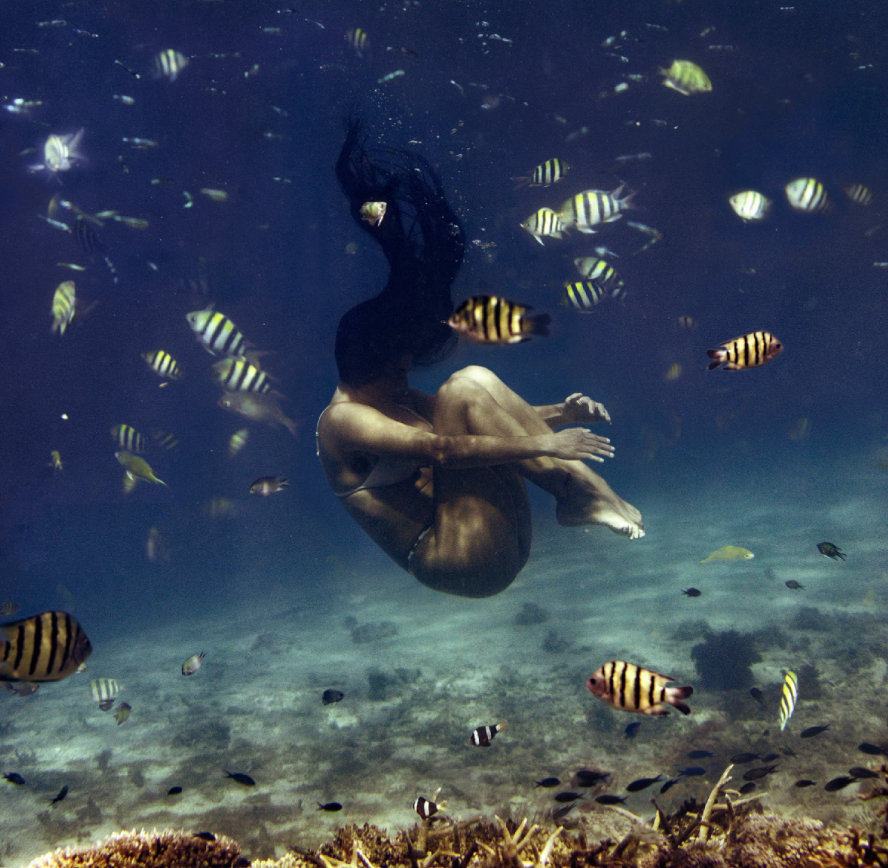

My name is Kristina Carrillo-Bucaram, and many know me as "FullyRaw Kristina."
I'm a writer, speaker and raw vegan activist who educates and guides people who are sick and tired of feeling "sick and tired" and are ready to take more control over their health and experience the compassionate lifestyle one can achieve by living FullyRaw.
FullyRaw is not just a diet. Its a lifestyle. I like to think of this way of eating as an awakening and way of rediscovering connection with ourselves, with others, and with our earth. I really believe it begins with food, and then it becomes a mind, body, and spirit transformation. It's a way for you to build the foundation that will lead you to a healthier, happier, and more abundant life. I'm here to help guide you through the journey of returning to yourself. As you dive into these programs, the recipes, the videos, the workshops and more, you're going to discover just how powerful fruits and vegetables really are for our bodies. I truly believe that food is medicine because I have seen its substantial transformational abilities myself. It's a mind, body, spirit journey.
